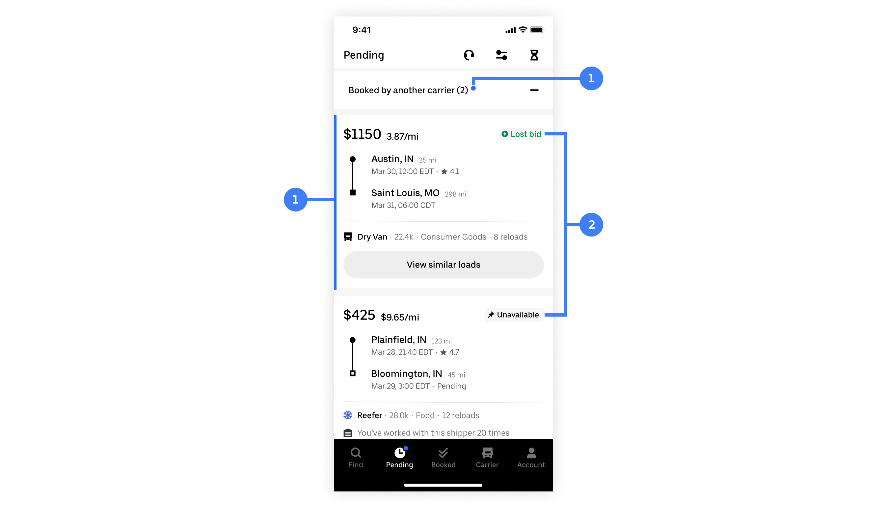

Role: Product Designer
Timeline: 6 Weeks
Stakeholders: 4 teams
Uber Freight is a digital freight brokerage that matches shippers with carriers. Shippers post loads that need hauling to the loadboard while carriers browse the loadboard and decide on loads to haul. I was on the Carrier Experience Team , dedicated to helping truck drivers find, book, and haul loads through the carrier app. I worked specifically on finding and booking loads.
Helping carriers find and book loads that need hauling
Back when Uber Freight had fewer product offerings, the structure of the carrier app could be more simple. As more product offerings and features were introduced, the app structure was revised to accommodate. As a result, a new tab was introduced.
1 – New tab: Pending
The Pending Tab was created but not much further thought was put into it. It has the potential to be really powerful for carriers but in its original state, it was just a dumping ground for various features. It results in many missed loads, which is bad for both users and the business.
How might we make the Pending Tab more intuitive and help carriers find the best loads to result in an increase of booked loads
First, I started by understanding why the Pending Tab was introduced and how it’s different from other tabs. I went through the research decks for the app structure revamp and interviewed all stakeholders. Finally, I synthesized the findings into stories for each of the relevant tabs.
Carrier app tab stories
Next, I set out to learn about all the different features that affect the Pending Tab and why. I mapped out the life cycle of a load and all the different flows to see where it could end up.
Left: bidding flows. Right: dedicated lanes flows.
Afterwards, I took all those findings and brought it back to the user. I assessed all the different states a load can be in and what that means to the truck driver. For each state, I looked at it through two lenses: intent to action (high to low) and conversion possibility (high to low).
Top: intent to action. Bottom: conversion possibility.
Once I felt I had a good grasp on the Pending Tab, I zoomed out to the rest of the experience to see how the Pending Tab fits in. User journeys were used to understand how carriers feel at each touchpoint in the load hauling experience.
Top: happy path. Bottom: unhappy path.
By this point, I was ready to start designing. Before putting pixels down, I had to first identify which design elements were needed. I drilled down to the core of the Pending Tab and started solving for the most common scenarios first. Four scenarios were identified:
Deliverables included designs for what the pending tab should be with the current product offers as well as a scalable, future-proof framework for how users use this tab.
A scalable framework for how users use and navigate the Pending Tab
Loads in the pending tab are loads that the user has expressed interest in but haven’t booked yet. There are a few ways that a user can “express interest” in a load:
The Pending Tab houses loads that the user has expressed interest in, but has not booked yet.
Some loads are more urgent and time-sensitive than others so we want to surface those in a timely manner and bring them front and center of the user.
To draw the user’s attention to the Pending Tab, a notification badge is used to inform users that there are loads to be seen. When there are time-sensitive loads (ie. loads reserved for the user), a tooltip is used to further reinforce the badge and prompt user attention without being too intrusive.
1 – Notification badge. 2 – Tooltip.
A more aggressive and persistent banner was explored. Right off the bat we knew that there would be some conflicts as when a haul is in progress, it utilizes a bottom sheet. Ultimately, we didn’t move forward with this exploration because there was data that showed with the current notification system that’s much more subtle than this, users weren’t missing time-sensitive loads anyways.
Loads that are reserved for the user are the most urgent and time-sensitive as they’re only held exclusively for that carrier for a limited time. For that reason, they’re separated out from other, less urgent loads.
When the user enters the Pending Tab and there are reserved loads, the reserved loads hub will immediately take over the experience automatically. This ensures that users don’t miss these time-sensitive loads.
Reserved loads full sheet takeover
We don’t want to block users from looking at other loads as they often compare loads against each other. However, they should be able to easily get back to the reserved loads once a decision has been made. An accessible entry point to the reserved loads hub solves for that.
Accessible entry point to reserved loads
Past iterations explored simply bumping reserved loads to the top of the page above passive loads. During stakeholder review, the feedback received indicated that these time-sensitive loads should feel more differentiated than other loads. There were also scalability concerns.
When a reserved load times out, it will still show up in the Pending Tab, just not under “reserved”. It is still a load of interest to the user, but less urgent as there is no time limit to book. The goal here is to inform users that there are new loads in the Pending Time while maintaining context. New loads that the user hasn’t seen are badged to visually differentiate from old loads.
1 – Badge to visually differentiate unseen loads. 2 – More unseen loads indicator.
Taking into consideration the device is mobile and the likelihood of a new load being below the fold, navigational elements were also introduced for ease of use.
Navigating multiple unseen loads
One iteration explored simply bumping new loads to the top. The cons is that new loads can only be easily compared against other new loads. It also causes weird interactions as the Pending Tab is organized by pick up date – once a load has been viewed, how would it slot back into the rest of the tab?
Since there can be many loads in the Pending Tab that wind up there for a variety of different reasons, we want to help users navigate the content and provide context.
Each load has its origin labeled. This way, users can quickly see at a glance identify why a load is in the Pending Tab. User research shows that the “origin” is a way to make quick decisions. For example, won bids have the highest conversion rate whereas bookmarked/pinned are lower.
1 – the reason a load is in the Pending Tab
One iteration explored grouping loads by their origins. During review, we felt that while it’s important for users to know why a load is in the Pending Tab, it doesn’t need to be this prominent and take up so much space.
To accommodate for the scenario where a user is coming into the Pending Tab to check on a load (ie. edit bid price, booking a bookmarked load, etc.), filters are used to help users easily find a specific load.
1 – Filter by load pending reason
Progressive disclosure is used to keep the filter sheet from becoming too cluttered.
Progressively disclosing filter parameters
A two other common filter patterns were explored but ultimately ruled out for three reasons:
Going back to the targeted metric of this project, we want users to be booking more loads on Uber Freight. Rather than users comparing loads on Uber Freight and other brokerages, we want them to compare Uber Freight loads against other Uber Freight loads.
Understanding carriers’ mental models when deciding on loads was key to determining how the Pending Tab should be organized. Users typically plan day by day and care more about date and location.
Illustrations by @maryamato88
Rather than shipping the org chart or features, loads were sorted by pick up date to match users’ mental models. It’s simple, flexible, and scalable. It allows for a mixing of load origins in a way that makes sense, easily accommodating for a wide range of potential configurations.
Organizing loads by date
Three other organization models were explored:
Taking what we learned from user research, we implemented a suggested sort that is based on conversation possibility & business needs.
Pending Tab loads: likelihood to book
When a load is lost (ie. booked by another carrier), users are anxious to replace them. They want to find similar loads. Additionally, users change their minds often. They may decline a load and then decide to book it later if they can’t find anything better.
When a load is lost or declined, it stays in the same place so that the change in status can be clearly communicated to the user. This way, users always know where to go to check on the status of a load. To keep the Pending Tab from being too cluttered, lost/declined loads are collapsed, but expandable.
Lost or declined loads
Badges are used to alert users of an unseen load status change. The status is also clearly communicated on the load itself alongside the origin to mitigate any confusion.
1 - Notification badge. 2 - Load status & origin
Three other concepts was explored:
When a load that the user is interested in gets booked by another carrier (ie. lost bid, didn’t book in time, etc.), users will be notified that the load is no longer available and can browse other similar loads. This enables users to quickly and easily replace the lost load.
Replacing a lost load
Knowing that users change their minds often, declined loads are treated similarly to lost loads. Declined loads are intentionally kept in the Pending Tab (but collapsed to help users focus on interested available loads) so that users can easily come back and book it.
Recovering a declined load
The framework now guides the Carrier Experience team in all things Pending Tab
While the designs are under development, the framework was presented to the entire Uber Freight Design Org. As the framework is meant to act as a guide for designers and how they treat the Pending Tab, it’s been adopted by the Carrier Experience team and guides all future Carrier App designs, especially those pertaining to the Pending Tab.
This was a really conceptual and ambiguous project with many different problems. The hardest part was figuring out where to start ‚Äì right off the bat I tried to solve every problem under the sun and getting overwhelmed. I learned that it‚Äôs okay to not solve everything right away and to take it one problem at a time. By solving each problem independently, the solution lies in their intersections. Plus, it‚Äôs a much better way to work without melting my brain üòÖ
Just because pixels are being pushed doesn’t mean the project is progressing. At one point I was just designing in circles. To break out of the cycle, I needed to reset and really get to the root of the problem. I had to ask myself “are my designs actually solving the problem or just the symptoms”? It also helped to go down one level of fidelity to keep myself from getting too caught up in the details – this was when I truly understood what low-fidelity mocks are used for.
The name of the project is a bit misleading as the scope of it isn’t necessarily contained to just one tab. This was a holistic project that doesn’t happen in a vacuum, nor does it have a clear flow beginning or end. To find an elegant solution, it’s a constant balance of zooming out and zooming in. And even though you’re designing within a system, you shouldn’t be constrained to existing patterns. Sometimes a new pattern is a better solution than an existing one.
This was the first time I had to manage multiple stakeholders, all of which being other teams across Carrier Experiences. It was difficult to juggle and balance each team's wants and needs, especially business needs. I learned that I, as the designer of a design-led initiative, had to take ownership, prioritize, and make decisions. You can’t make everyone happy but that doesn’t matter because the user comes first. Always.